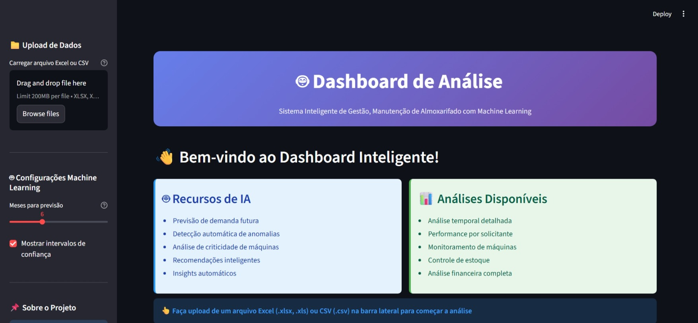
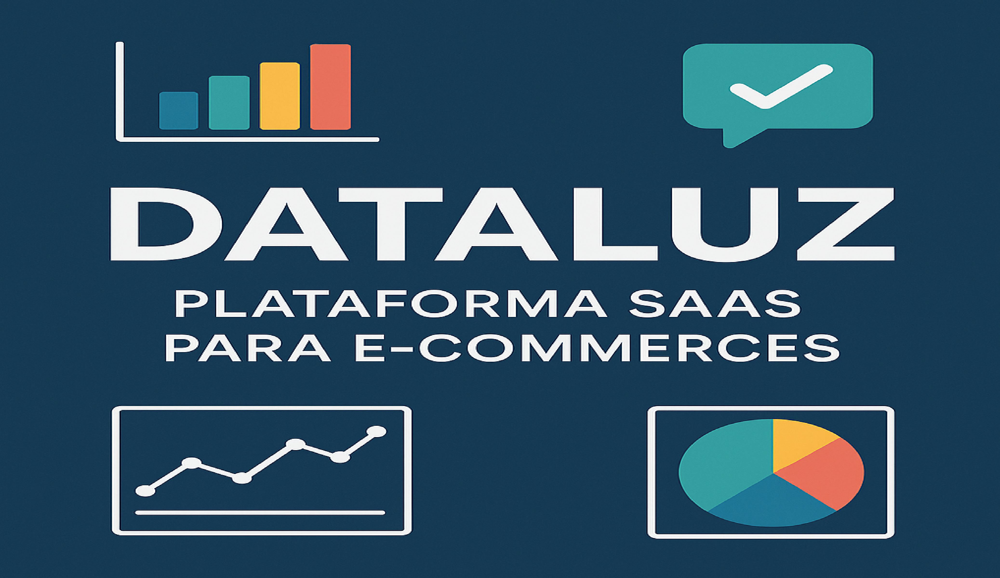
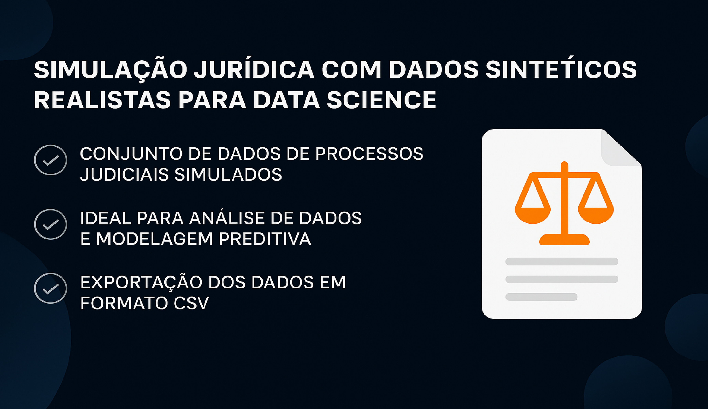
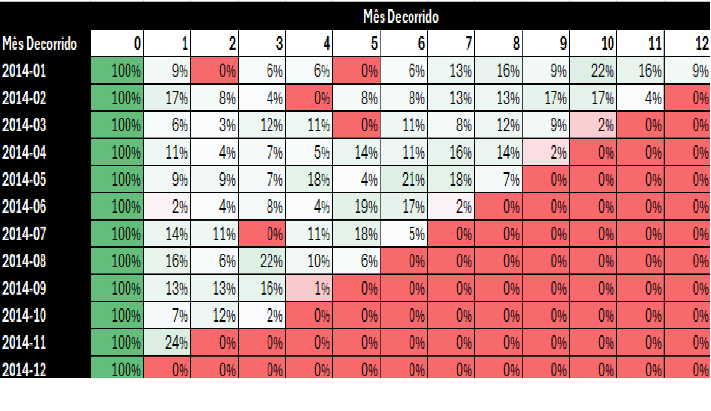
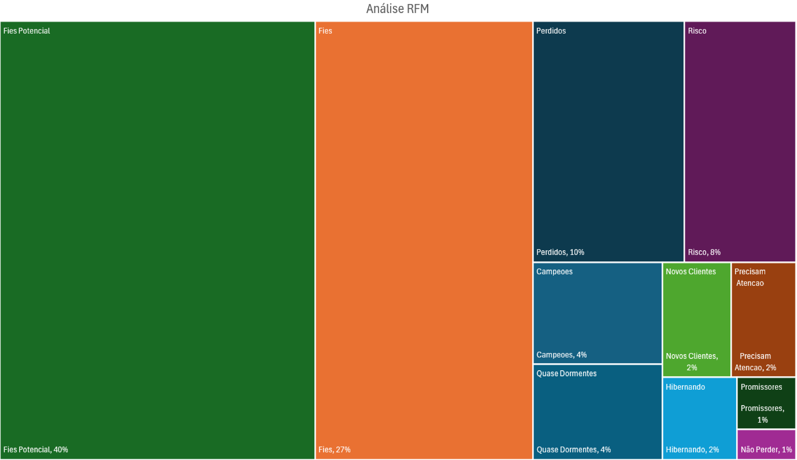

Hola, bienvenido(a) a mi portafolio de Business Intelligence y Análisis de Datos
Transformo datos, procesos y reglas de negocio complejas en indicadores estratégicos,
dashboards ejecutivos y automatizaciones operativas. Mi stack central está compuesto por
Power BI avanzado, SQL avanzado, Python para análisis de datos y Power Platform,
apoyando directamente a la toma de decisiones gerenciales y directivas.
Aquí encontrará casos de estudio enfocados en el retorno de inversión (ROI), paneles executivos y automatizaciones que simplifican las rutinas operativas.
Siéntete libre de explorar y contactarme a través de los enlaces al final de la página.
Mi nombre es Kelvin Santos Andrade
Soy un Analista de Datos & BI Developer con más de 7 años de experiencia en gestión de negocios en el sector comercial y minorista, lo que me proporcionó una visión analítica sobre operaciones, finanzas y procesos de negocio. Traduzco la complejidad operativa de la industria y el comercio en reportes ejecutivos eficientes, basando decisiones en datos concretos.
Mi Rol
Actúo como un traductor de negocios a datos. Soy responsable de todo el pipeline analítico: desde la ingeniería de requisitos con stakeholders y diseño de reglas de cálculo (KPIs), hasta el modelado dimensional de datos, desarrollo de procesos de ETL rápidos y creación de dashboards premium con alto poder de storytelling.
Stack Tecnológico
- BI & Visualización: Power BI, DAX, Power Query, Excel avanzado, Streamlit, Storytelling
- SQL, ETL & Modelagem: SQL avanzado, Oracle SQL, SQL Server, PostgreSQL, modelagem analítica fato/dimensão, qualidade de dados
- Python & Automatización: Python, Pandas, NumPy, Scikit-learn, Jupyter Notebook, Power Automate, Power Apps
- Dominio de Negocio: ERP Sankhya, venta al por menor, industria, financiero, logística, inventario, ventas y operaciones
💡 Mi objetivo es transformar datos dispersos y complejos en inteligencia corporativa estructurada, generando eficiencia y un retorno real sobre las inversiones.
BI & Visualización de Dados
- Power BI & DAX: Creación de paineles dinámicos con modelado de datos, medidas complejas y optimización de rendimiento de renderizado.
- Power Query: Procesos de extracción, transformación y carga (ETL) robustos directamente en los flujos de Power BI.
- Excel & Streamlit: Informes estructurados en hojas de cálculo con VBA y desarrollo de interfaces interativas rápidas en Python.
SQL, ETL & Modelado
- SQL Avanzado: Dominio absoluto en consultas complejas, CTEs, Window Functions y stored procedures en Oracle SQL, PostgreSQL y SQL Server.
- Modelado Analítico: Estructuración de bases de datos relacionales y dimensionales (tablas hecho/dimensión) optimizadas para reportes.
- Calidad de Datos: Validación de integridad y auditoría de bases para garantizar la consistencia de las reglas de negocio.
Python para Datos
- Pandas & NumPy: Manipulación, tratamiento avanzado y limpieza de grandes volúmenes de datos de fuentes diversas.
- Análisis Exploratorio (EDA): Investigación estadística descriptiva y detección de anomalías operacionales.
- Modelos Predictivos: Machine learning aplicado a previsiones de demanda y consumo con scikit-learn.
Power Platform & Automatización
- Power Automate: Automatización de envío de reportes, flujos de aprobación de datos y alertas operativas.
- Power Apps: Desarrollo de micro-aplicaciones para la recolección de datos controlada en almacenes y tiendas.
- Integración Completa: Conexión nativa entre ERP Sankhya, base Oracle y Power Platform para agilizar la toma de decisiones.
Analista de Datos / BI Developer - Fiação Itabaiana
Agosto 2025 - Actual · Ribeirópolis, Sergipe, Brasil
Liderazgo en el desarrollo de informes analíticos, dashboards y automatizaciones para soporte a la toma de decisiones ejecutivas en las áreas comercial, suministros, expedición, finanzas y contraloría.
Principales Responsabilidades y Resultados
- Modelado analítico y optimización de consultas complejas en Oracle 19c (CTEs, Window Functions, PL/SQL) para la generación de paneles estratégicos y auditoría de procesos.
- Desarrollo de dashboards ejecutivos de alto rendimiento en Power BI con reglas de cálculo DAX optimizadas para el monitoreo de facturación, inventario y eficiencia industrial.
- Automatización de flujos de ETL y envío de indicadores con Python, Power Automate y Power Apps integrados al ERP Sankhya.
- Mapeo y levantamiento de requisitos de datos con gerentes y directores para diseñar nuevas métricas de desempeño e informes.
Competencias Técnicas
Power BI, DAX, Power Query, Oracle SQL, PL/SQL, Power Platform, Python, ETL, Modelado Analítico, ERP Sankhya.
Analista de Datos & Power BI Freelancer
Mayo 2025 - Actual
Consultoría independiente enfocada en la transformación analítica de negocios, modelado dimensional e implantación de Business Intelligence.
Principales Proyectos y Resultados
- Desarrollo de dashboards personalizados en Power BI integrando fuentes de datos heterogéneas (APIs, PostgreSQL, Excel y archivos CSV).
- Estructuración y modelado dimensional hecho/dimensión para garantizar el rendimiento y la organización de los paneles analíticos.
- Conversión de hojas de cálculo operacionales complejas (como seguimiento de metas, matrices GUT y OKRs) en flujos de BI limpos e informes dinámicos.
Competencias Técnicas
Power BI, DAX, Power Query, Modelado Dimensional, SQL, Python (Pandas/Streamlit), ETL, Excel Avanzado.
Assaí Atacadista — Visión de Negocios y Gestión (7+ años)
Múltiples cargos de liderazgo · Sergipe, Brasil
Más de 7 años de trayectoria en posiciones de liderazgo en retail mayorista, desarrollando una visión de C-level sobre operaciones, finanzas y procesos comerciales. Esta experiencia es la base de mi capacidad para traducir reglas de negocio en datos e inteligencia de mercado.
Más de 3 Años como Jefe Administrativo
- Reducción del 30% en gastos operativos con reorganización logística y control de flota
- Ahorro mensual de R$ 10.000 con optimización de cámaras frigoríficas y energía
- Mejora del 15% en precisión de inventarios cruzando SQL y Excel
- Organización de procesos ETL manuales y automatización de informes gerenciales
1 Año como Jefe de Recepción
- Reducción del 25% en tiempo promedio de recepción con mejora de flujo operacional
- Mejora del 18% en precisión fiscal con verificación cruzada
- Reducción del 40% en errores operativos con rutina de entrenamiento
Más de 4 Años como Asistente de TI
- Reducción del 35% en incidencias repetidas con procesos estandarizados
- Reducción del 22% en tiempo medio de resolución con scripts y checklists
- Disponibilidad de PDVs en 98% con mantenimiento preventivo
- Soporte a más de 150 usuarios y 26+ PDVs simultáneos

Dashboard de Almacén con Machine Learning
Sistema inteligente desarrollado para análisis predictivo y gestión estratégica de almacenes
industriales.
Utiliza técnicas avanzadas de Machine Learning para predecir demandas, detectar
anomalías
y optimizar procesos de mantenimiento. El dashboard ofrece interfaz interactiva con
Streamlit, soportando archivos Excel y CSV.
- Herramientas: Python, Streamlit, Scikit-learn, Prophet, Plotly, Pandas
- Modelos ML: Regresión Lineal, Random Forest, Gradient Boosting, Prophet (Meta)
- Funcionalidades: Previsiones 3-12 meses, detección de anomalías, análisis de
criticidade, control financeiro
- Destaque: Patch para NumPy 2.0+, validación de datos, gráficos ordenados cronológicamente

DataLuz – Plataforma SaaS para E-commerce
Desarrollé una solución digital ficticia para pequeños y medianos e-commerce que enfrentan dificultades
con el análisis de datos. DataLuz ofrece dashboards intuitivos, alertas automáticas vía
WhatsApp e informes personalizados. El proyecto forma parte del curso de la Comunidad DS e incluye la
creación completa de un modelo de negocio digital con estrategias AARRR.
- Herramientas: Estrategia de Producto, Métricas AARRR, Viaje del Cliente
- Problema: Falta de tiempo y conocimiento técnico para Business Intelligence
- Solución: Integración vía API, informes automatizados y visualización simplificada
- Destaque: Envío de insights directamente al WhatsApp del emprendedor

Simulación Jurídica con Datos Sintéticos
Desarrollé un generador de datos jurídicos sintéticos y realistas, creando un dataset completo con
2.000 procesos, partes involucradas y movimientos procesales. Esta solución es ideal para demostrar
habilidades en análisis de datos, BI y modelado predictivo en un escenario que simula el mundo legal
real.
- Herramientas: Python, Pandas, Faker
- Problema: Dificultad para acceder a datos jurídicos detallados debido a la
confidencialidad
- Solución: Script que genera un dataset robusto y verosímil en formato .csv, listo
para usar en Power BI, Excel o Python
- Destaque: Capacidad de simular un entorno complejo, con valores de causa,
provisiones de riesgo, fases procesales y abogados responsables

Análisis Cohorte – SuperStore
Utilizando Excel, desarrolló un análisis de retención de clientes (Cohort Analysis) con datos reales
de una cadena nacional de supermercados. A partir de la limpieza y estructuración de datos,
identifiqué los mejores grupos de adquisición y patrones de comportamiento, generando insights
estratégicos para retención y ventas.
- Herramientas: Excel, BUSCARV, Tablas Dinámicas, Formato Condicional
- Resultado: La cohorte de mayo/2014 tuvo la mejor retención después de 6 meses
(11%)
- Insight clave: Las campañas promocionales impactan positivamente en la recompra

Análisis RFM – Segmentación de Clientes
Clasifiqué a los clientes según su comportamiento de compra utilizando la técnica RFM
(Recencia, Frecuencia y Valor Monetario). Este análisis permite segmentar la base de clientes
para crear campañas personalizadas y maximizar el retorno de inversión en marketing.
- Herramientas: Excel (ÍNDICE, COINCIDIR, SUMAR.SI, PERCENTIL)
- Segmentos creados: Campeones, Leales, Prometedores, Perdidos y más
- Resultados: 40% de los clientes son potencialmente leales; solo 1% está en "No
Perder"
🧩 Proyectos Complementarios en Sistemas y Gobernanza
Proyectos que demuestran mi capacidad para estructurar soluciones completas, integrar datos, modelar bases de datos relacionales y apoyar la gestión corporativa

Integraciones y Gobernanza de ERP Corporativo (Fiação Itabaiana)
Sustentación técnica del ERP Sankhya en ambiente industrial, incluyendo customizaciones
en Java en el core del sistema, modelado de banco en Oracle 19c e integración de datos fiscales, financieros y operacionales.

Plataforma SaaS: Strategic Premium
Producto web construido en PHP/Laravel 11 con FilamentPHP para la gestión de OKRs corporativos.
Cuenta con arquitectura multi-tenant con aislamiento de base de datos y auditoría de gobernanza de datos.

Modernización de Legado: Strategic Enterprise
Ingeniería de requisitos completa y refactorización de sistema de gestión estratégica.
Reestructuración de tablas relacionales, auditoría de logs (Spatie Activitylog) y control de permisos.
Perspectivas sobre Business Intelligence & Análisis de Datos
Comparto casos prácticos, tendencias y aprendizajes sobre Business Intelligence, análisis de datos, dashboards interativos, SQL avanzado y automatizaciones de procesos. Revisa el artículo más reciente:
📊 Dashboard de Almacén con Machine Learning: Un Caso de Éxito
17 de Octubre, 2025 |
15 min de lectura
Cómo transformé un problema de gestión de inventario en una solución inteligente usando Power BI,
Python y Machine Learning. Descubre los desafíos, soluciones técnicas y resultados medibles
de este proyecto en la industria textil.
Temas principales: Predicción de Demanda, Detección de Anomalías,
Optimización de Inventario, ROI del 320%
🎯 Casos de Estudio
Proyectos reales con resultados analíticos medibles
📊 Business Intelligence
Visualización de datos, Power BI, DAX y storytelling con datos
🗄️ SQL & Automatización
Modelado hecho/dimensión, consultas complejas y Power Platform